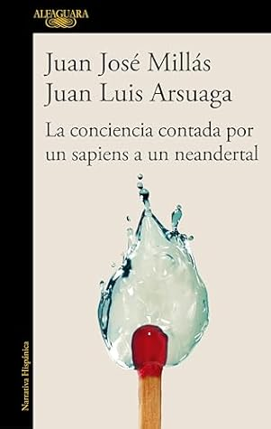

La conciencia contada por un sapiens a un neandertal
Reseña por Jorge I. Zuluaga

Ver reseña en GoodReads (necesita cuenta)
Porque de eso se trata La conciencia contada por un sapiens a un neandertal, así como los otros libros de la serie, La vida contada por un sapiens a un neandertal y La muerte contada por un sapiens a un neandertal : buena divulgación científica pero acompañada por vivencias relacionadas con el tema, buenas conversaciones entre dos amigos muy distintos —como son la mayoría de los buenos amigos— y agradables reflexiones de matiz humanístico, especialmente literario. Personalmente estoy encantado de haber asistido al nacimiento del género y espero que otros autores y autoras se lancen a escribir más textos así para que se ratifique su existencia. Les confieso que yo mismo estoy animándome a hacerlo, aunque es temprano para revelar mi propia iniciativa.
En La conciencia contada por un sapiens a un neandertal, Arsuaga y Millás se lanzan a por uno de los temas más difíciles de la investigación científica moderna: ¿qué significa ser conscientes? ¿Lo son también otros animales? Como siempre, somos testigos de esta larga conversación que comenzó en el primer libro de las aventuras a las que el ecléctico Juan Luis Arsuaga, eminente paleoantropólogo español, lanza a su amigo Juan José Millás, reconocido escritor de la misma nacionalidad, para mostrarle, de una manera muy original, lo que la biología, las neurociencias y la misma paleoantropología saben hoy sobre ese fenómeno que llamamos la consciencia.
Si Arsuaga es el motor científico en esta aventura, el matiz humanístico que da Millás a las conversaciones —contenido en las reflexiones de este libro por la ventaja que tiene el escritor de ser quien define finalmente su contenido— ayuda a comprender mejor lo invisible detrás de las explicaciones. Es justamente esta combinación lo que hace única esta forma de divulgación; por eso me gusta llamarla «divulgación con alma». Para muestra, reproduzco este aparte del prólogo donde Millás escribe tras su primera charla con Arsuaga sobre la relación mente-cerebro: «Comprendo la relación íntima entre el cerebro y la mente (no hay mente sin cerebro como no hay leche sin teta ni semen sin testículos), pero no estoy seguro de que sean lo mismo». ¡Ahí está el curubito de todo el asunto! Es difícil que alguien inmerso en el mundo de la ciencia positiva pueda resumirlo de manera tan sencilla.
Como en las entregas anteriores, me encantaron las contradicciones y los contrastes entre las posiciones morales de Millás y de Arsuaga; esas posiciones sobre las que el científico se queja a veces con amargura, pero que el humanista parece admitir con naturalidad. Esto resalta el choque de visiones, sin desconocer que Arsuaga posee una sensibilidad y una cultura humanística poco comunes en las «ciencias duras».
A lo largo del texto se insertan datos, experimentos y resultados de primer nivel que clarifican los temas centrales, pero no como lo haría un manual convencional. Lo hacen a través de experiencias en laboratorios, museos o restaurantes, de la mano de expertos y expertas. En esto, ambos tienen la suerte de vivir en un país, España, que desde los tiempos del gran Santiago Ramón y Cajal —quien está, por supuesto, entre los protagonistas de este libro—, se mantiene en la frontera de la investigación en neurociencias.
Por supuesto, el libro está lleno de perlas asombrosas: que el cerebro social está vinculado al tamaño del grupo, que existen neuronas individuales para recuerdos específicos (como reconocer a Jennifer Aniston), que la subjetividad tal vez no tenga una función utilitaria inmediata, o que Spinoza pensaba que Dios no es quien inventó la máquina del cosmos, sino que es la máquina en sí.
Dicen que aquí termina la trilogía. Yo sospecho que este par, como incluso confiesan al final, se han divertido tanto que veremos más libros similares en el futuro. Espero que la predicción se cumpla; y si no, nos quedan estos tres volúmenes asombrosos para releer y seguir aprendiendo.